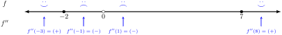

You are given the formula for the derivative \(f''\text{,}\) so you do not need to do any calculus.
\begin{equation*}
f'' = \dfrac{(x+2)(x-7)}{x^2} = \dfrac{A}{B}
\end{equation*}
Recall that for fractions, \(\frac{A}{B}=0\) if and only if \(A=0\text{,}\) and \(\frac{A}{B}\ DNE\) if and only if \(B=0\)
To find when \(f''=0\text{,}\) solve the equation
\begin{align*}
(x+2)(x-7) \amp = 0
\end{align*}
which happens when \(x=-2\) or \(x=7\text{.}\)
To find when \(f''\ DNE\text{,}\) solve the equation
\begin{align*}
x^2 \amp =0
\end{align*}
which happens when \(x=0\)
Using these values, we can make the sign chart as before

Using the sign chart, we see that the original/mystery function \(f\) is concave up on the interval \((-\infty,-2)\cup(7,\infty)\text{.}\) \(f\) is concave down on the interval \((-2,0)\cup(0,7)\text{.}\)
There are inflection points (the curve bends) at \(x=-2\) and \(x=7\text{.}\)